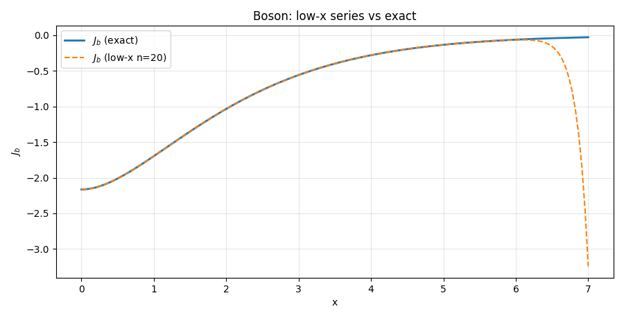

Short Hand for All Thermal Integrals
# Dispatcher Helpers — Jb and Jf Short Hands
Purpose¶
Thin, user friendly wrappers that dispatch to the implementations of the Jb & Jf modernized:
exact(numerical quadrature),low(small-(x), high-T series),high(large-(x), low-T Bessel-(K) sum),spline(cubic spline in (\(\theta=x^2\)), allowing (\(\theta<0\))).
They preserve the legacy API and defaults, validate inputs consistently, and keep scalar-in → scalar-out behavior (vectorized over arrays).
Signatures¶
Jb(x, approx: str = "high", deriv: int = 0, n: int = 8) -> float | np.ndarray
Jf(x, approx: str = "high", deriv: int = 0, n: int = 8) -> float | complex | np.ndarray
Parameters (common)¶
x(float | array-like): Forapprox in {"exact","low","high"}this is the usual real (x=m/T). Forapprox=="spline",xis (\(\theta = (m/T)^2\)) (can be negative; legacy behavior).approx("exact"|"high"|"low"|"spline"): Which evaluator to use (default"high").deriv(int): Derivative order — allowed per mode:exact: 0 or 1 •low: 0 •high: 0..3 •spline: 0..3.n(int): Truncation — used only in series/sum modes:low: number of tail terms (≤ 50) •high: number of Bessel-sum terms.
Returns¶
Jb:float | ndarrayJf:float | complex | ndarray(inexactmode, legacy complex dtype is preserved; use.realif you only need the physical value for real (x)).
Notes¶
- Spline mode uses (\(\theta\)), not (x), by design. This allows (\(\theta<0\)) (tachyonic curvature) and matches the legacy spline tables.
- Complex (x) has no physical meaning here and is not supported by these wrappers; if you truly need complex analysis, call the exact scalar routines directly.
- Validation mirrors each backend’s capability (
lowsupports values only;highsupports up to 3rd derivative; etc.).
See also (all details)¶
- Exact integrals and derivatives: Exact Thermal Integrals (J_b, J_f)
- Spline construction & use: Spline Thermal Integrals (J_b, J_f)
- Low-(x) (high-T) series: Approx — Low-x Series
- High-(x) (low-T) series: Approx — High-x Series
Tests (Jb, Jf) - All plots¶
Test A — Exact (\(J_b\), \(J_f\)) on (\([0,10]\))¶
What it checks: Baseline curves from numerical quadrature; values at (x=0) match \((J_b(0)=-\pi^4/45)\) and \((J_f(0)=-7\pi^4/360)\). Expectation: Both start negative and monotonically approach 0 as (x) grows.
Figure

Console output
=== Test A: exact J_b, J_f on [0,10] ===
At x=0: J_b=-2.164646467421e+00, J_f=-1.894065658994e+00.
Test B — Spline (\(J_b\), \(J_f\)) on ([0,10]) with (\(\theta=x^2\))¶
What it checks: Spline evaluation agrees with exact on the same (x)-grid (using (\(\theta=x^2\))). Expectation: Small max relative differences, consistent with spline accuracy.
Figure
Console output
=== Test B: spline J_b, J_f on [0,10] (θ = x^2) ===
Max relative diff spline vs exact on [0,10]: J_b: 5.564e-04, J_f: 2.479e-05
Test C — Exact first derivatives \((\mathrm dJ/\mathrm dx)\) on ([0,10])¶
What it checks: Direct quadrature of (dJ/dx). Expectation: (dJ/dx) is (0) at (x=0) (removable singularity handled), positive for (x>0), and decays with (x).
Figure

Console output
=== Test C: exact derivatives dJ/dx on [0,10] ===
dJ_b/dx at x=0: 0.000e+00 (expected 0); dJ_f/dx at x=0: 0.000e+00 (expected 0)
Test D — Spline first derivative mapped to (x) via chain rule¶
What it checks: Spline derivatives (computed in \((\theta))\) correctly mapped to (x): \((\frac{dJ}{dx} = 2x,\frac{dJ}{d\theta})\). Expectation: Close agreement with exact (dJ/dx).
Figure
Console output
=== Test D: spline first derivative (chain rule to dJ/dx) on [0,10] ===
Max relative diff (spline→x) vs exact dJ/dx: J_b: 3.758e-02, J_f: 2.851e-03
Test E — Spline second derivative mapped to (x)¶
What it checks: Chain rule for the second derivative:
Expectation: Smooth, sensible curvature; finite at (x=0).
Figure

Test F — Low-(x) series vs exact (with relative error)¶
What it checks: High-T (small (x)) series accuracy windows.
Ranges: (\(J_b\)) on ([0,7]), (J_f) on ([0,3.7]).
Expectation: Low relative error in these windows; error grows as (x) leaves the intended regime.
Figures
- Boson: series vs exact — 
- Boson: relative error —

- Fermion: series vs exact —
- Fermion: relative error —

Console output
=== Test F: low-x series vs exact (with relative error) ===
Boson low-x: max rel err = 1.183e+02
Fermion low-x: max rel err = 1.422e+01
Test G — High-(x) series vs exact on ([1,10]) (with relative error)¶
What it checks: Low-T (large (x)) Bessel-sum accuracy. Expectation: Semilog plot shows exponential tails; series tracks exact well with modest (n) (here (n=8)).
Figures
- Semilog magnitude —
- Relative error —

Console output
=== Test G: high-x series vs exact (x in [1,10]) ===
High-x: max rel err J_b: 6.351e-07, J_f: 3.878e-07
---------- END OF TESTS: Dispatcher (Jb, Jf) ----------
Notes¶
- Spline mode input: remember that the dispatcher expects (\theta=x^2) as input in
"spline"mode; chain rule conversions are used for derivatives in (x). - Relative error definition: (\(\mathrm{rel}=\frac{|A-B|}{\max(|B|,10^{-12})}\)).
- For quicker runs, reduce grid sizes or narrow (x)-ranges during development.
- see tests/finiteT/Short_Hand for more